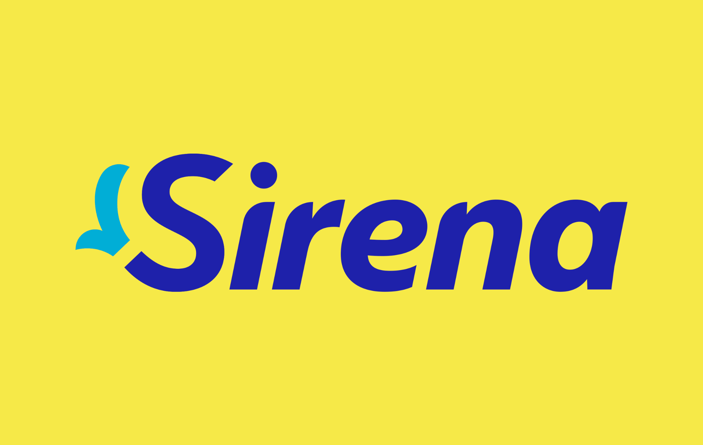

Resumen Ejecutivo
Estado general del proyecto, presupuesto, cobertura de compras, riesgos y cuenta regresiva hacia la apertura.

CENTRO DE CONTROL DE INICIATIVAS
Esta web convierte la plantilla del proyecto en una vista ejecutiva para entender, en un solo lugar, cuánto tenemos presupuestado, qué se ha comprado, qué pagos vienen, qué entregas están en riesgo y qué pendientes pueden afectar la apertura.
Empieza por Resumen Ejecutivo. Luego entra al módulo que explique la causa: presupuesto, flujo de caja, compras o pendientes.
MAPA DEL DASHBOARD
Estado general del proyecto, presupuesto, cobertura de compras, riesgos y cuenta regresiva hacia la apertura.
Detalle de partidas, proveedores, órdenes de compra y montos que todavía requieren gestión.
Cuándo se esperan los desembolsos, cuánto se pagará por mes y recordatorios automáticos de próximos pagos.
Pipeline de procurement para localizar cuellos de botella entre proveedor, OC y seguimiento logístico.
Centro de control de temas abiertos, responsables y comentarios que requieren seguimiento.
Estimador para visualizar el efecto de flete, seguro, gravamen, ITBIS y otros gastos de importación.
LECTURA DE COLORES
ACTUALIZACIÓN
data/projects/.
La estructura está preparada para agregar otros proyectos mediante el selector superior sin rediseñar el dashboard.
CONTROL EJECUTIVO
Vista integrada de presupuesto, procurement y preparación del proyecto.
CUENTA REGRESIVA
Fecha objetivo: 15 de noviembre de 2026
OPTIMIZACIÓN DEL PROYECTO
Compara el Plan detallado Aprobado contra el Plan Detallado en ejecución de la hoja Plan OI.
PROJECT HEALTH
PRÓXIMOS DESEMBOLSOS
PRESUPUESTO VIGENTE POR PARTIDA
APROBADO VS. VIGENTE POR PARTIDA
AHORRO / INCREMENTO POR PARTIDA
PRIORIDADES DE GESTIÓN
PROCUREMENT
PROVEEDORES
CALIDAD DE DATOS
PRESUPUESTO & COMPRAS
Drill-down desde gran partida hasta ítem y proveedor.
CATEGORÍAS
CONCENTRACIÓN
DETALLE
| Partida | Ítem | Proveedor | OC / Estado | Fecha | Presupuesto | Moneda |
|---|
FLUJO DE CAJA
Visualiza cuándo está programado pagar y qué compromisos se aproximan según el BD Plan Detallado.
REMINDERS AUTOMÁTICOS
NECESIDAD DE CAJA POR MES
CALENDARIO DE PAGOS
COMPOSICIÓN POR MONEDA
FLUJO ACUMULADO
PRÓXIMOS COMPROMISOS
PRÓXIMOS PAGOS
| Mes | Partida | Ítem | Proveedor | Pago | Moneda | Monto original | Equiv. DOP | Estado calendario |
|---|
SEGUIMIENTO DE COMPRAS
De la necesidad a la recepción, priorizando cuellos de botella.
PIPELINE
CUELLOS DE BOTELLA
PROVEEDORES
SEGUIMIENTO
| Ítem | Partida | Proveedor | Estado | Comentario | Valor |
|---|
PENDIENTES & RIESGOS
Lo que todavía necesita respuesta, responsable o cierre.
RESPONSABILIDAD
REGLAS DE LA PLANTILLA
PRE-LIQUIDACIÓN
Simula el costo puesto en República Dominicana antes de cerrar una compra internacional.
Úsala para comparar rápidamente escenarios de importación por país de origen. A partir del valor de compra estima flete, seguro, CIF, gravamen, ITBIS y otros gastos, ayudando a decidir si una cotización internacional sigue siendo conveniente antes de emitir la orden. Es una herramienta de decisión preliminar, no una liquidación aduanal definitiva.